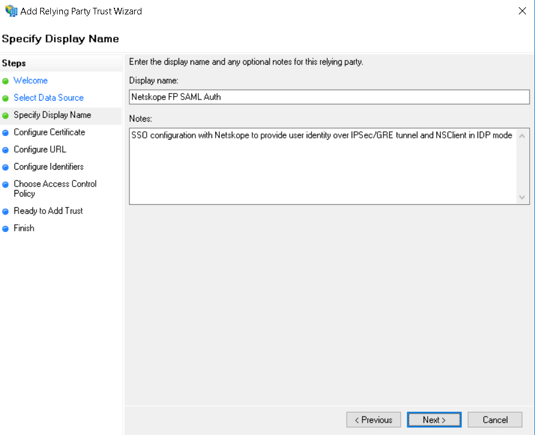
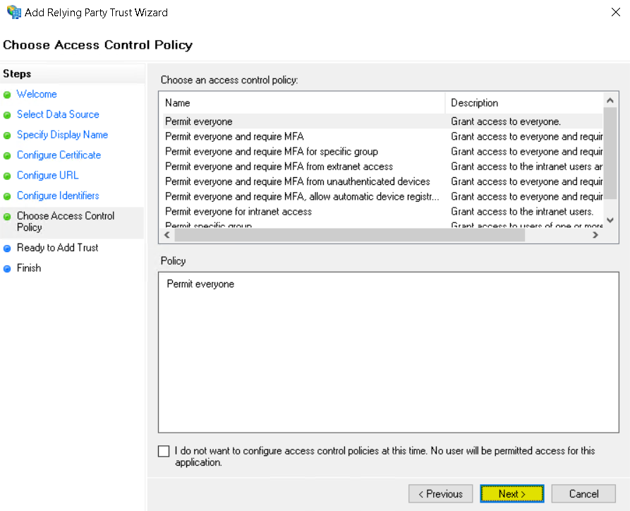
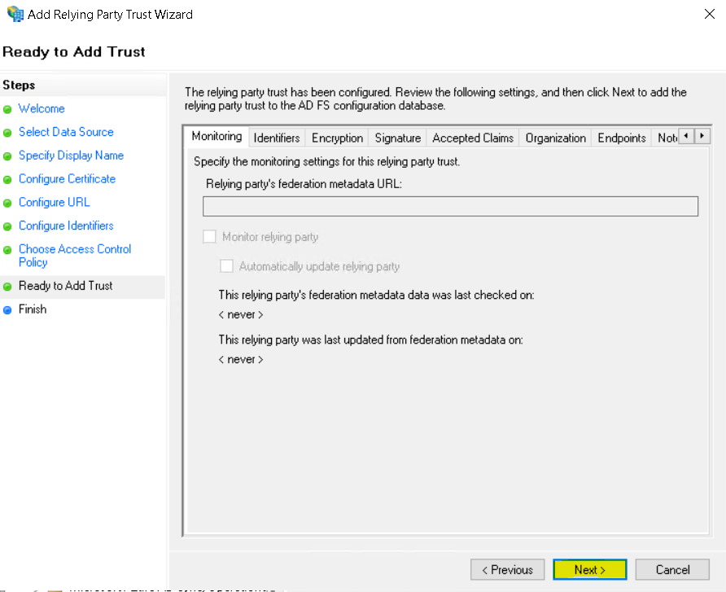
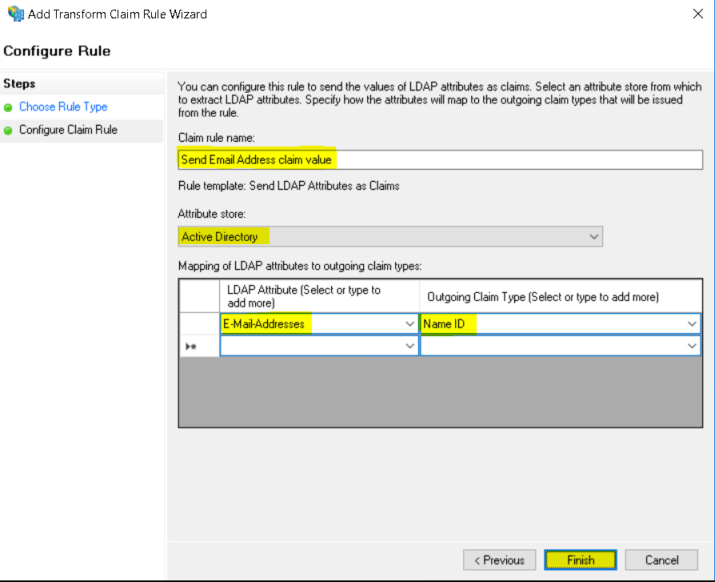

Configure ADFS IdP for Netskope SAML – Forward Proxy
Launch the ADFS console, right-click Relying Party Trusts and select Add Relying Party Trust.

Select Claims aware and click Start.

Select Enter data about the relying party manually and click Next.

Enter Display Name: Netskope FP SAML Auth
Enter Notes: SSO configuration with Netskope to provide user identity over IPSec/GRE tunnel and NS Client in IdP mode.
Click Next.
 Click Next.

Select Enable support for the SAML 2.0 WebSSO protocol and enter the SAML ACS URL you copied from the Netskope tenant.
Click Next.

Add the SAML Entity ID you copied from the Netskope tenant.
Click Next.

Leave the default settings and click Next.
 Click Next.
 Un-check the configure claims issuance policy for this application
Click Close.

The Relying Party trust has been created. Right-click on it and select Properties.

Select Signature (tab) and click Add to add the Netskope SAML certificate.

Click View to check the certificate, click OK and then click Apply.
The certificate warning message can be ignored

Select Advanced tab and select SHA-1.
Click OK and click Apply.

Right-click and select Edit Claim Issuance Policy.

Click Add Rule.

Select Send LDAP Attribute as Claim and click Next.

Enter: Claim rule name: Send Email Address claim value
Attribute store: Active Directory
LDAP Attribute: E-Mail-Addresses
Outgoing Claim Type: Name ID
Click Finish
 Click Apply and click OK.

Launch a Windows PowerShell in Administrator mode. Enter this command to list all the ADFS Relying Party Trusts.
Get-AdfsRelyingPartyTrust | Select-Object Name, SigningCertificateRevocationCheck,EncryptionCertificateRevocationCheck

From the output you can see CheckChainExcludeRoot is configured for Signing and Encryption Revocation checks
The Signing and Encryption Revocation checks value should be set to None
Enter these commands:
Get-AdfsRelyingPartyTrust -Name "Netskope FP SAML Auth" | Set-AdfsRelyingPartyTrust -SigningCertificateRevocationCheck None
Get-AdfsRelyingPartyTrust -Name "Netskope FP SAML Auth" | Set-AdfsRelyingPartyTrust -EncryptionCertificateRevocationCheck None

Enter this command to validate the value has been set to None
Get-AdfsRelyingPartyTrust | Select-Object Name, SigningCertificateRevocationCheck, EncryptionCertificateRevocationCheck

Click Exit to close the PowerShell.
Note: Below command displays all the configurations of the relying party trust.
Get-AdfsRelyingPartyTrust -Name "Netskope FP SAML Auth"
Get the below details from ADFS which will be used within Netskope to configure the ADFS settings for SAML authentication.
Entity ID (format: https://<adfs fqdn>/adfs/services/trust)
IDP URL (format: https://<adfs fqdn>/adfs/ls/)
Token-signing certificate (available in ADFS > Service > Certificates)
You can also browse to ADFS URL to extract details: https://<adfs fqdn>/FederationMetadata/2007-06/FederationMetadata.xml

The ADFS configuration is complete.